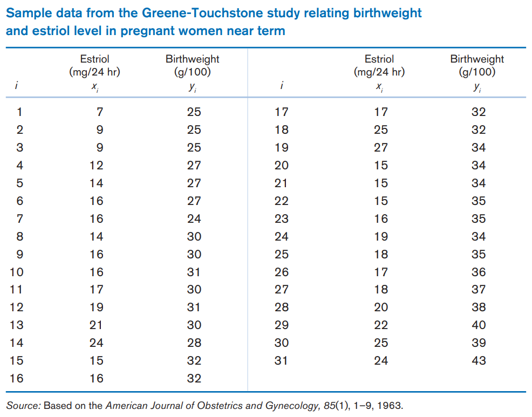
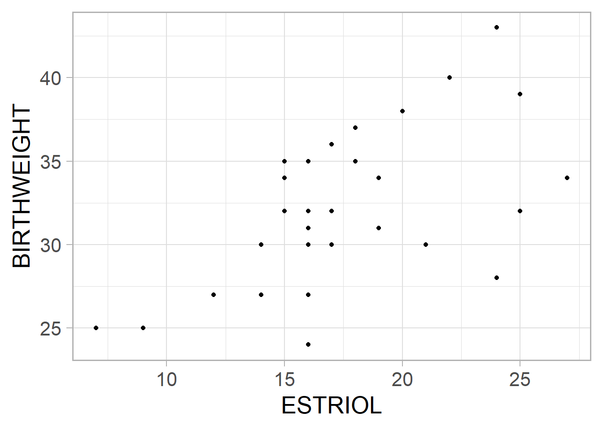

Warning: package 'dplyr' was built under R version 4.2.3
Attaching package: 'dplyr'
The following objects are masked from 'package:stats':
filter, lag
The following objects are masked from 'package:base':
intersect, setdiff, setequal, union
library(data.table)
Attaching package: 'data.table'
The following objects are masked from 'package:dplyr':
between, first, last
Fundamentals of Biostatistics에 소개되어 있는 데이터를 활용해 회귀분석을 진행해봅시다. 먼저 estriol 데이터를 불러옵니다.

Fundamentals of Biostatistics, 8th ed.
est <-fread("data/estriol.csv",data.table =FALSE)library(ggplot2)ggplot(data = est) +geom_point(aes(x=ESTRIOL, y=BIRTHWEIGHT)) +theme_light(base_size=20)

주어진 데이터를 직접 눈으로 확인하여 결측치가 있는지, 이상치(outlier)가 있는지 메인 분석 전에 미리 확인하는 것이 중요합니다. 이를 Exploratory Data Analysis (EDA)라고도 합니다. 지금은 Estriol과 Birthweight간 그래프를 그려 확인해보았습니다. 선형성이 보이나요?
다음으로는 회귀분석을 해보겠습니다. Linear regression은 다음과 같은 모형을 가집니다.
\[
y=\alpha+\beta x+ e
\]
회귀분석을 하는 기본 함수는 lm입니다. 그리고 (BIRTHWEIGHT ~ ESTRIOL) 이렇게 써져있는 것처럼 formula에 대해서 익숙해져야합니다. 수식을 쓴다고 생각하면 쉬울 수 있습니다. 내가 만들고자하는 모형에서 y에 해당하는 변수가 물결(~)의 왼쪽, x에 해당하는 변수가 오른쪽으로 나열되면 됩니다. 지금은 BIRTHWEIGHT가 y이기 때문에 왼쪽, ESTRIOL이 x이기 때문에 오른쪽에 위치하게 됩니다.
model을 해석하기 위해서는 summary()함수를 씁니다. 다양한 정보가 있는데 우리는 Coefficients, R-squared, F test에 대한 p-value정도를 확인하면 됩니다.
summary(lm_fit)
Call:
lm(formula = BIRTHWEIGHT ~ ESTRIOL, data = est)
Residuals:
Min 1Q Median 3Q Max
-8.1200 -2.0381 -0.0381 3.3537 6.8800
Coefficients:
Estimate Std. Error t value Pr(>|t|)
(Intercept) 21.5234 2.6204 8.214 4.68e-09 ***
ESTRIOL 0.6082 0.1468 4.143 0.000271 ***
---
Signif. codes: 0 '***' 0.001 '**' 0.01 '*' 0.05 '.' 0.1 ' ' 1
Residual standard error: 3.821 on 29 degrees of freedom
Multiple R-squared: 0.3718, Adjusted R-squared: 0.3501
F-statistic: 17.16 on 1 and 29 DF, p-value: 0.0002712
anova(lm_fit)
Analysis of Variance Table
Response: BIRTHWEIGHT
Df Sum Sq Mean Sq F value Pr(>F)
ESTRIOL 1 250.57 250.574 17.162 0.0002712 ***
Residuals 29 423.43 14.601
---
Signif. codes: 0 '***' 0.001 '**' 0.01 '*' 0.05 '.' 0.1 ' ' 1
Estriol 변수에 대한 추정량 \(\beta\)가 0.6082라고 계산이 되었고 p-value가 0.05보다 작기 때문에 통계적으로 유의한 변수라고 결론내릴 수 있습니다.
모델 자체가 의미있는지를 확인하기 위해서는 F test의 p-value를 확인합니다. 지금은 univariable linear regression이기 때문에 베타의 p-value랑 동일하고 역시 유의하다고 볼 수 있습니다. 이 결과를 사용하여 다음과 같은 회귀식을 만들 수 있습니다.
\[
Birthweight=21.5234+0.6082*Estriol
\]
그럼 새로운 데이터가 들어왔을 때 예상되는 birthweight를 추정해볼 수 있겠습니다. Estriol이 15인 새로운 데이터가 생겼다고 가정합시다. 새로운 데이터를 모델에 넣어 y가 어떻게 나오는지 확인하고자할 땐 predict()함수를 사용합니다.
predict(lm_fit, data.frame(ESTRIOL=15))
1
30.64629
data <-fread("data/hyp_ihd_cohort.csv", data.table =FALSE)t.test(filter(data, HYP ==1)$TOT_CHOL, filter(data, HYP ==0)$TOT_CHOL)
Welch Two Sample t-test
data: filter(data, HYP == 1)$TOT_CHOL and filter(data, HYP == 0)$TOT_CHOL
t = 3.7837, df = 495.11, p-value = 0.0001735
alternative hypothesis: true difference in means is not equal to 0
95 percent confidence interval:
4.138246 13.078552
sample estimates:
mean of x mean of y
201.5006 192.8922
이번엔 중간고사 데이터를 다시 불러와보겠습니다. 그리고 범주형 변수인 HYP를 x변수로 두고 연속형 변수 TOT_CHOL을 y로 두어 분석해보겠습니다. 원래와 같이 two-sample t test를 하면 다음과 같이 나옵니다.
이전에 배운 two-sample t test와 연결지어서 어떤 공통점이 있는지 확인해보세요. 회귀분석은 등분산성을 가정하고 있기 때문에 two-sample t test에서는 등분산성을 가정한 결과와 동일하게 나옵니다.
Two Sample t-test
data: filter(data, HYP == 1)$TOT_CHOL and filter(data, HYP == 0)$TOT_CHOL
t = 3.7949, df = 1160, p-value = 0.0001553
alternative hypothesis: true difference in means is not equal to 0
95 percent confidence interval:
4.15773 13.05907
sample estimates:
mean of x mean of y
201.5006 192.8922
Multivariable linear regression - regression과 ANOVA
이번엔 BP_SYS 변수를 활용해 고혈압 그룹을 새롭게 정의하여 세 군으로 만들어보겠습니다. (정상, 고혈압 1기, 고혈압 2기)
이번엔 중간고사 데이터(data)를 활용하여 모델을 만든 후 변수선택법을 통해 최적의 모델을 선정해볼 것입니다. 변수선택법 중에 잘 쓰이는 stepwise selection을 해볼 것입니다. R로 쉽게 적용할 수 있고 함수는 step입니다. 이 때 예제로 쓰이는 모델의 y가 무엇이고 x가 무엇인가요?